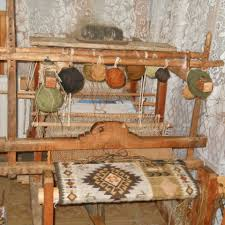

Originalitatea fiecărui popor se caracterizează prin potențialul creator, care își găsește expresia în cultura materială și spirituală. Un loc aparte în această cultură îl ocupă meșteșugurile populare.
Din cele mai vechi timpuri în Moldova alături de agricultură, păstorit populaţia sătească avea cu un şir de îndeletniciri practice, care formează aşa-numita „industrie casnică”, bazată pe materia primă locală, uneltele lucrate în gospodărie, braţele de muncă ale membrilor casei în vederea satisfacerii necesităţilor funcţionale şi estetice ale familiei. Pentru a satisface cerinţele gospodăreşti şi a vieţii rurale în Moldova s-au dezvoltat un şir de meşteşuguri, unde meșterii produceau şi realizau produsele sale la comandă şi pentru piaţă.
Pe această resursă veți putea găsi mai multe informații utile despte diferite tipuri de meșteșuguri populare
Broderia este o modalitate tehnico-decorativă de împodobire a ţesăturilor cu acul şi aţa. Tradiţiile ei sunt de mare vechime în Moldova.Broderia se realizează cu acul, deci este un procedeu tehnico-decorativ de înfrumuseţare a ţesăturilor, a pieselor vestimentare din ţesătură, piele.Multe din acestea se înfrumuseţau prin broderie: Cămaşele femeieşti şi cele bărbăteşti, prosoapele de nuntă.
Crosetarea, cunoscuta din timpuri straveci, s-a dezvoltat pe parcursul secolilor, devinind în zilile noastre una dincele mai îndragite hobi a femeilor ce se ocupa cu lucrumanual..Arta de a croşeta oferă posibilitatea de a utiliza o gamă bogată de îmbinări de laţuri din firul de aţă şi procedee tehnice, care oferă ca rezultat o mare varietate de noi modele a pieselor croşetate...
O origine a acestei indeletniciri nu este cunoscuta cu certitudine ,dar se crede ca tricotatul a aparut chiar in perioada dinainte de Hristos .Tricotatul probabil a fost adus din Orientul Mijlociu catre Europa prin Spania, de catre mauri.Primele obiecte de imbracaminte tricotate se pare ca au fost ciorapii.